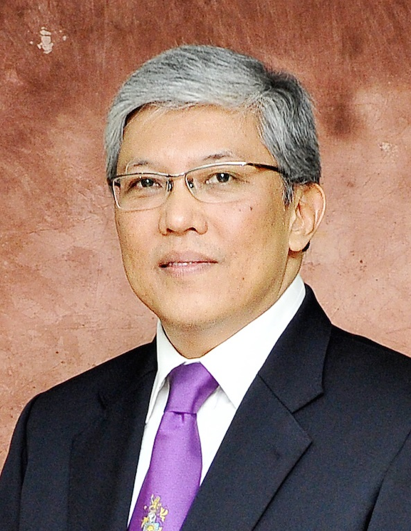
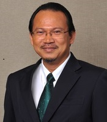

KEYNOTE SPEAKERS
International Conference on Information & Communication Technology for the Muslim World (ICT4M 2020)

YM Tengku Datuk Dr. Mohd Azzman Shariffadeen Tengku Ibrahim
Chairman, Board of Director, Universiti Malaya

Prof. Dr. Mohamed Ridza Wahiddin
Vice Chancellor of Universiti Sains Islam Malaysia

Dr Mazlan Abbas
Founder, FAVORIOT

Prof Norbik Bashah Idris
CIO, Information Technology Division
Professor, Kulliyyah of ICT